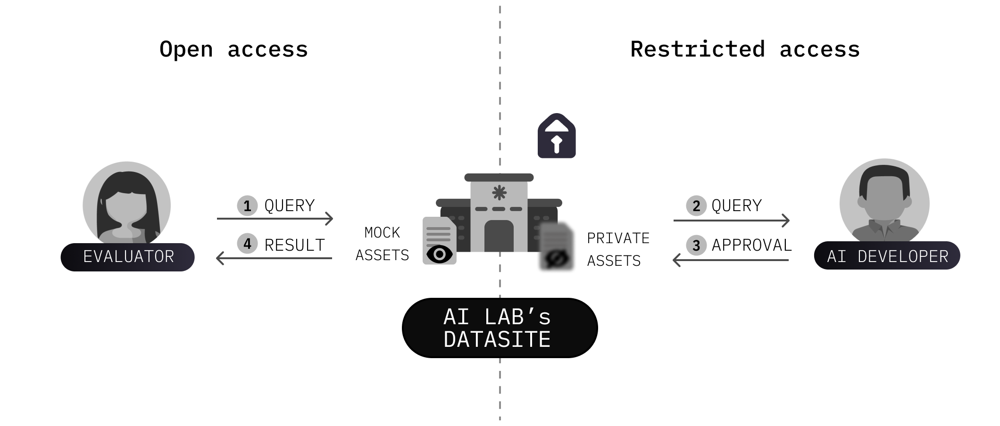

TLDR - EleutherAI and OpenMined conducted a demonstration project to show how third-party evaluators can query a non-public AI training dataset. This approach provides third-party evaluators with a new method for conducting AI safety evaluations without accessing the model or sensitive data.

The Problem
With the rapid advancement of frontier artificial intelligence (AI) models, establishing effective third-party oversight and evaluation is crucial to ensure their responsible development and maintain public trust. However, many third-party oversight methods primarily rely on black-box access, in which evaluators can only query the system and observe its outputs. This degree of access severely restricts the ability of third parties to evaluate and interpret the models, because they do not have any information about the model’s inner workings, or its training and development [Cite: https://arxiv.org/pdf/2401.14446].
Many AI safety research projects are limited to black-box access methods because AI developers have valid concerns about the risks associated with providing broader access to underlying assets, such as training data, user logs, or development methodology. Typically, these risks include invading the privacy of model users or of those in the training data, compromising the security of the AI system, and revealing valuable, proprietary intellectual property (IP).
As long as these risks remain unaddressed, AI developers and third-party evaluators (including researchers, academic institutions, governments, etc.) will find it difficult to collaborate on making AI systems safer.
The project
The Project
Over the past several months, EleutherAI and OpenMined have collaborated on a project to demonstrate that third parties can run informative, custom safety evaluations against non-public assets without revealing proprietary or sensitive information. In this project, we used PySyft, a library developed by OpenMined, to investigate a non-public Large Language Model (LLM)’s training dataset hosted by EleutherAI.
Given that the demonstration project primarily focused on the evaluation method rather than on the particular outcome of the chosen evaluation, we could have investigated whether the training data leads to various safety risks (i.e., cyber security, manipulation of public opinion, etc.) as the illustrative example. That said, we chose to evaluate the degree to which harmful and undesirable training data was available to the LLM, as such an evaluation can reveal the degree to which an LLM has access to dangerous knowledge. More specifically, our evaluation
Setting up Third-party Evaluations with PySyft
PySyft is an open-source library developed by OpenMined designed to enable responsible access to sensitive data and models while mitigating risks associated with this access. In this case, PySyft was used to support the responsible access of a third-party evaluator to sensitive LLM training data while mitigating the AI developer’s concerns over the risks associated with such access.
Through PySyft, the third-party evaluator analyzed the private training data by:
* Learning from the mock data (i.e., data that directly imitates the real data in its schema and structure but does not have real, private values) what their evaluation query could contain.
* Writing a specific evaluation query, based on what they learned from the mock data, using arbitrary code for any analysis they’d like to compute on the private data — as if they had direct access to the real private data.
* Testing this arbitrary code against the mock data to ensure the code compiles, functions correctly, and returns the expected results.
* Submitting this code to the AI developer for review.
- The AI developer can review the code for any issues and either request changes or approve the query to be executed on the private data.
* Reviewing the results once the code is approved executed on the privately hosted data, and the results are returned.
Evaluation Setup
As stated above, given that the demonstration project primarily focused on the evaluation method rather than on the particular outcome of the chosen evaluation, we could have investigated the presence of various types of dangerous knowledge in the training data (i.e, dangerous pathogens, cybersecurity). We focused here on illustrating its application for bio-safety risks. We initiated our evaluation by searching the LLM training dataset for information about three commonly used biological agents. Since the evaluation is illustrative rather than substantive, we chose relatively benign biological agents to serve as proxies for more harmful pathogens that could be revealed through a similar evaluation technique. The three biological agents included:
- Bacillus subtilis – a soil bacterium, commonly used as a model organism for basic research.
- Influenza virus – the family of viruses that causes the flu, commonly used for vaccine development.
- Respiratory Syncytial Viruses (RSV) – a virus commonly used in research that is harmless in most adults but can lead to disease in elderly people and children.
EleutherAI privately hosted the training dataset for evaluation, which consisted of documents, each with text comprised of a subset of Falcon-RefinedWeb, OpenOrca, and a non-public dataset provided by the UK AISI containing a high incidence of sensitive information about these biological agents.
The evaluator tested a keyword-based method to ascertain if the training dataset contained the targeted biological agents. The evaluation used Term Frequency-Inverse Document Frequency (TF-IDF) based search to identify problematic documents in the training dataset. Other Bayesian methods, such as Latent Dirichlet Allocation, or more advanced retrieval methods, such as semantic search, were considered but ultimately not tested, given the emphasis on the methodology of conducting third-party evaluations and not on the evaluation performance.
Notebooks to replicate this training data evaluation are available here: https://github.com/OpenMined/llm-training-data-eval
Evaluation Results & Succesful Demonstration
Our evaluation showed that TF-IDF effectively retrieved most documents in the training dataset containing subtilis, likely because it has fewer written variations than other biological agents. However, TF-IDF performed less precisely with documents matching the other query terms. These limitations can be mitigated by carefully selecting the query terms or using semantic search, which accounts for the context in which terms are used.
Of over 200,000 documents evaluated, only a very small fraction contain the biological agents, as most of the training dataset is non-curated web data. However, our purpose is not to retrieve the documents perfectly but to produce a simple binary answer - whether or not the training data contains the biological agents. Regardless, we evaluate precision and recall for each query with respect to the known dangerous documents in the dataset. In this case, recall is especially important as large frontier models can learn effectively even if there are only a few tangentially related documents in a pretraining dataset. Our evaluation flagged roughly 60 documents, and EleutherAI was able to inspect the results, with their domain expertise and strategic context, before releasing them to the evaluator. In this case, only a summarized view of the results and not the documents themselves were released to the evaluator.
| Query / Result | % of Documents Returned | Precision | Recall |
|---|---|---|---|
| "subtilis" | 0.01% | 0.79 | 0.79 |
| "RSV" | 0.03% | 0.11 | 0.60 |
| "influenza" | 0.03% | 0.21 | 0.57 |
While we can find a significant fraction of the documents, some are missed. A closer inspection of the missing documents shows many, but not all, are for products and reagents. In such cases, the AI developer might decide to release back subsamples to the third-party evaluator to allow for small-scale qualitative analysis to better understand the results of the evaluation and identify improvements.
The completion of the evaluation successfully demonstrated that this evaluation method and setup can be used to identify the presence of information, such as toxic or harmful knowledge, in a private LLM training dataset. In practice, any Python evaluation can be run through PySyft, and TF-IDF was used here for illustrative purposes. In addition, we learned that it is crucial for the third-party evaluator to independently assess the performance of their evaluation before conducting a remote evaluation, as it is particularly challenging to measure performance against the hidden or private test set (i.e., the AI developer’s data).
Future Work
In addition to demonstrating the viability of PySyft for enabling external safety research of proprietary AI models, our collaboration helped identify areas where additional features or improvements could be introduced to PySyft to enhance the remote execution user experience for both AI developers and third party evaluators, and account for the third party evaluators’ concerns over the verification of evaluation integrity and the honesty of the results. The latter is particularly important to ensure with a high degree of confidence that the remote evaluation took place as specified and based on the data promised for analysis.
While this project was concerned with safety against biorisk, and only evaluated training datasets, future work could explore using this method to interrogate a broader range of assets, such as the model’s gradients, activation functions, log-probability outputs, weights, and beyond.
Conclusions
The project concluded with the evaluator inspecting the LLM’s training data for risk-relevant features, and doing so in a manner that assuaged and minimized numerous risk factors, including various legal, privacy, IP, cost, and security concerns. These risk factors are what often restricts AI safety work to “black-box access” methods, whose deficiencies have been exhaustively documented by leading academic researchers worldwide [Cite: https://arxiv.org/pdf/2401.14446].
Thus, this project demonstrates that the infrastructure and governance approach provided by PySyft can enable novel forms of AI safety evaluations. Our hope is that this will facilitate mutually-beneficial collaborations and partnerships between third-party evaluators and AI developers throughout the model development life cycle.
We are sincerely grateful to all of our collaborators from OpenMined for their pioneering efforts and significant contributions to this work. We also thank the UK AI Safety Institute for providing early advice and introductions to make the project possible, as well as providing the proxy dataset used in the evaluation.